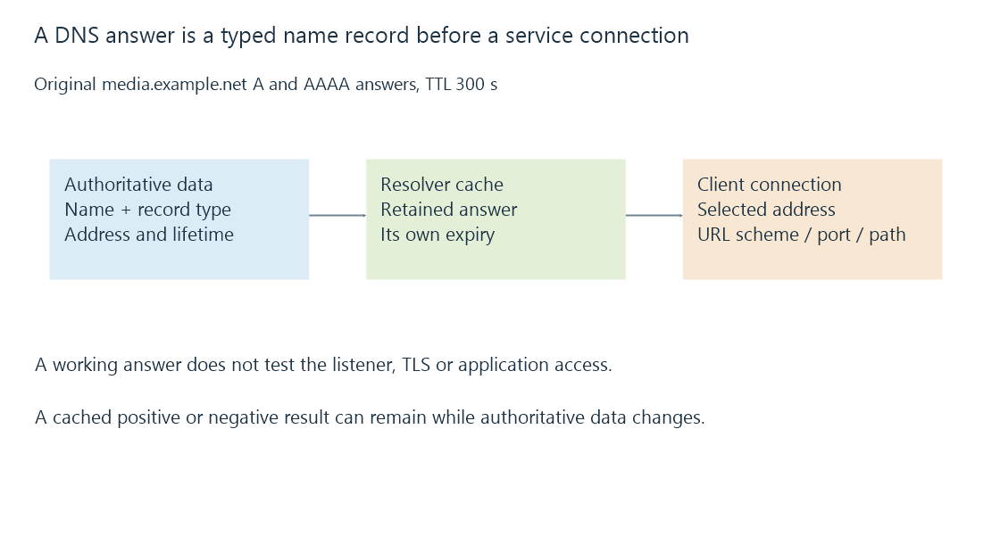

DNS resolution, record types and cached answers
DNS resolves typed questions about names through authoritative data and caches, with address answers providing only one stage of a server connection.
In https://media.example.net:45000/, the hostname is media.example.net. A normal address lookup asks DNS for address records for that name.
The lookup does not test port 45000, complete TLS or log into Emby. Those stages use the chosen answer later.
Address records have types
An A record supplies an IPv4 address; an AAAA record supplies an IPv6 address. A CNAME identifies another name to follow rather than directly supplying an address.
This original reduced answer set uses documentation addresses:
{
"name": "media.example.net",
"records": [
{"type": "A", "value": "198.51.100.12", "ttlSeconds": 300},
{"type": "AAAA", "value": "2001:db8:50::20", "ttlSeconds": 300}
]
}
The name and address labels are invented. They are not endpoints to query or contact.
Ordinary A/AAAA resolution leaves the URL’s scheme, port and path intact. Other DNS record types can include service information, such as the port in an SRV record, when the client implements that discovery method.
The resolver can answer from a cache
The client normally uses a resolver. That resolver can obtain information from authoritative DNS data and retain it for its supplied lifetime.
A cached answer is not a fresh measurement of the destination server. It describes the name-to-record relationship last obtained under the cache rules.

Consider a teaching timeline where an A answer is cached at second zero with a three-hundred-second TTL. At second one hundred, the authoritative record changes to another address.
A resolver retaining the original positive answer can still supply it before its expiry at three hundred. Another resolver asking after the change can supply the newer value.
Both can follow the stated caching model while giving different answers. Special stale-answer mechanisms and local overrides have additional rules; this example isolates an ordinary unexpired positive cache.
No address and no connection are different failures
| Result | Meaning to examine |
|---|---|
| NXDOMAIN | The queried name does not exist under the answer’s context |
| Name exists, requested record type absent | No matching data for that type |
| Resolver timeout | No timely usable resolution response |
| Address returned, connection fails | The later route/service path failed |
For example, an absent AAAA record does not establish that an A record is absent. A returned A address followed by a refused TCP connection is not a DNS-name failure.
DNS can use UDP and TCP; current implementation requirements include TCP support. “DNS is just UDP port 53” omits useful behavior, especially for responses requiring another transport exchange.
A missing-name answer can be cached too
Negative caching retains an applicable negative result under its supplied lifetime rules. Creating the missing record does not force every resolver to ask again immediately.
Use this original reduced name case:
{
"negativeFetchedAt": 0,
"negativeTtlSeconds": 120,
"nameCreatedAt": 30,
"queryAt": 60
}
At second sixty, the model’s unexpired negative cache can still answer that the name is absent. Its stated expiry is second 120, ninety seconds after the authoritative name was created.
A lookup that never produces an address has not reached the TCP listener. Restarting the media decoder cannot replace that retained name result.
The exact negative cache key and lifetime depend on the response type and DNS rules. NXDOMAIN and absence of one record type must retain their different meanings. The numbers above are declared inputs rather than a captured resolver response.
An alias and target have separate record lifetimes
Suppose an original CNAME maps media.example.net to gateway.example.net for six hundred seconds, while the target A answer has a three-hundred-second TTL.
The alias can remain correct after the target address changes. Once the target A cache expires, that record can be obtained again without waiting for the unchanged alias to expire too.
Conversely, changing the alias itself leaves its earlier unexpired CNAME answer applicable under the ordinary cache model. “The DNS cache” is therefore not one timer attached to the entire displayed URL.
Different address families can select different paths
A client can receive both address families and choose, order or race connection attempts. Happy Eyeballs describes one concurrency strategy intended to improve connectivity.
The IPv4 and IPv6 answers can lead to different routing, listener or firewall outcomes. Seeing one working browser does not identify which family another app attempted.
Keep the name question and endpoint result separate
For a failed Emby connection, retain the actual name, record type, returned address and selected endpoint. That makes a stale record different from a missing listener or an application rejection.
See Also
- Dynamic DNS and a changing server address
- Split DNS and location-dependent server endpoints
- Hostnames, URLs and the complete server endpoint
- IPv6 addressing, scope and reachability